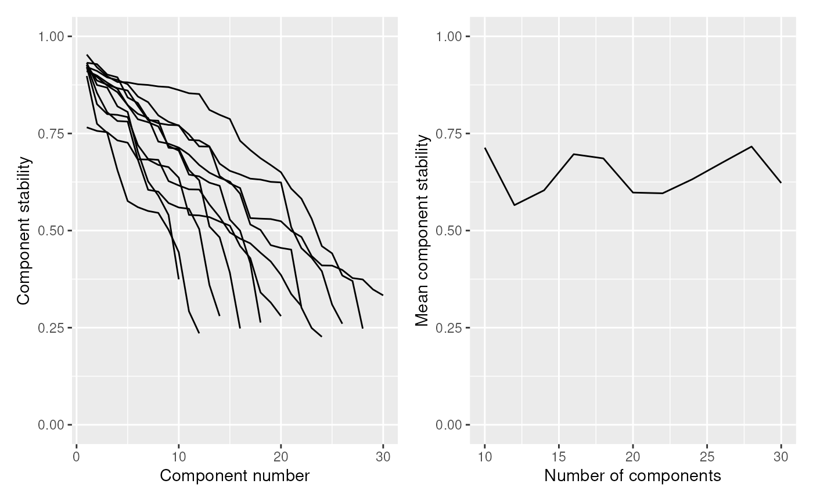

Plot component stability as a function of the number of components
Source:R/factors.R
plotStability.RdPlots the results of estimateStability. See this function's documentation for more information.
Usage
plotStability(
stability,
plot_path = NULL,
stability_threshold = NULL,
mean_stability_threshold = NULL,
height = 4,
width = 10,
...
)Arguments
- stability
The results of estimateStability.
- plot_path
The path at which the plot will be saved
- stability_threshold
Plots a stability threshold, below which components can be pruned by runICA.
- mean_stability_threshold
Plots a stability threshold, which is used by estimateStability to provide a naive estimate for the optimal number of components.
- height
The height of the plot, to be passed to ggsave.
- width
The width of the plot, to be passed to ggsave.
- ...
Additional arguments to be passed to ggsave.
Value
Returns a list of three plots as ggplot2 objects:
- combined_plot
The two other plots combined with patchwork.
- stability_plot
A plot in which each line indicates stability as a function of the number of components. A line is shown for each number of components tested.
- mean_plot
The average component stability as a function of the number of components.
Examples
# Get a random matrix with rnorm, with 200 rows (features)
# and 100 columns (observations)
X <- ReducedExperiment:::.makeRandomData(200, 100, "feature", "obs")
# Estimate stability across 10 to 30 components
stab_res <- estimateStability(
X,
min_components = 10,
max_components = 30,
n_runs = 5,
verbose = FALSE
)
# Intracluster stability similar to extracluster since this is random data
plotStability(stab_res)$combined_plot
